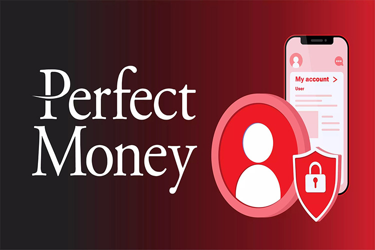

برای استفاده و یا نگهداری ووچر پرفکت مانی حتما نیاز به حساب پرفکت مانی نخواهید داشت و آن را مانند یک اعتبار در نظر بگیرید که توسط هر شخصی قابل استفاده است. از طرفی کارمزد بسیار کم ووچر پرفکت مانی موجب شده است که حتی افراد برای نقل و انتقال عادی پول نیز به آن مراجعه کنند. امنیت بالا و همچنین عدم محدودیت در استفاده موجب شده است که حتی برای خرید محصولات خاص نیز مورد استفاده قرار گیرد و تمامی سایتهای بین المللی درگاه پرفکت مانی را در کنار مستر کارت و پی پال قرار دهند که خبر از اهمیت آن دارد. هنگام خرید پرفکت مانی آنلاین بدون احراز هویت حتما به واحد پول آن نیز دقت کنید.
ووچر پرفکت مانی
ووچر پرفکت مانی یک نوع چک الکترونیکی است که از آن برای واریز یا برداشت وجه به حساب پرفکت
مانی استفاده میشود. این چک الکترونیکی از چند بخش مختلف تشکیل شده است و به شما این امکان را میدهد که
بتوانید پرداختهای خود را به صورت سریع و امن انجام دهید؛ به عبارت دیگر ووچر پرفکت مانی یک نوع چک الکترونیکی است
که برای واریز یا برداشت وجوه به حساب Perfect Money استفاده میشود.
این کوپن الکترونیکی شامل کد ۱۶ رقمی منحصر به
فرد و دیجیتالی، کد فعال سازی ۱۰ رقمی، تاریخ ایجاد و مبلغ اعتبار است. ووچر نوعی چک بانکی الکترونیکی است که به
عنوان ابزاری برای برداشت و سپرده ایجاد میشود. لازم به ذکر است که بیش از ۲۰۰ صرافی از کارتهای اعتباری
ووچر پرفکت مانی پشتیبانی میکنند.
ووچر پرفکت مانی شامل موارد زیر است:
حال که با ووچر پرفکت مانی آشنا شدید، زمان آن
رسیده تا بدانید که ووچر پرفکت مانی شامل چه مواردی میشود. در تمامی اجزای یک ووچر پرفکت مانی را خدمت شما شرح
دادهایم:
- کد ۱۶ رقمی دیجیتال
- کد فعالسازی ۱۰ رقمی
- تاریخ ایجاد ووچر
- مبلغ اعتبار چک
خرید ووچر پرفکت مانی به دلیل مزیتهای بیشمار و کاربردهای متنوع آن بسیار در بین افراد رواج پیدا کرده است. این کوپنها یک راه ایمن، سریع و کم دردسر برای انجام امور مالی بینالمللی به حساب میآید. در این مطلب به معرفی و بررسی کارایی و ویژگیهای آن میپردازیم.

ووچر چیست؟
ووچر (کوپن) به فایل یا پوشهای گفته میشود که شرکتها از آن برای ذخیره اسناد استفاده میکنند. این اسناد ممکن است برای تایید مجوز دریافت چک، تایید فاکتور، دریافت گزارش، سفارش خرید یا درخواست خرید به کار برده شود. به عبارتی ووچر تمام اسنادی را که از پول پشتیبانی میکنند را به صورت ایمن نگهداری میکند.
اما در دنیای دیجیتال، ووچر به کدهای سازماندهی شدهای گفته میشود که از یک سری اعداد یا حروف تشکیل شدهاند. از ووچر میتوانید برای خرید کالا و خدمات، پرداخت وجه آنلاین و … استفاده کنید. ووچرها در سرتاسر جهان مورد استفاده قرار میگیرند. به عبارتی ووچرها به عنوان یکی از کاربردیترین تجهیزاتی هستند که در دنیای تجارت الکترونیک ساخته شدهاند.
آیا برای استفاده از کد ووچر پرفکت مانی باید در سایت پرفکت مانی حساب داشته باشیم؟
خیر. برای استفاده از کد ووچر پرفکت مانی نیازی به داشتن حساب پرفکت مانی نیست. در واقع شما به راحتی میتوانید از طریق صرافیها معتبر نسبت به خرید و فروش ووچر اقدام نمایید. صرافی ایکس پِی یکی از بهترین صرافیها برای تهیه ووچر است و به شما این امکان را میدهد که ووچر پرفکت مانی را با قیمت مناسب و در کمترین زمان ممکن خریداری کنید.
علاوه بر این با استفاده از صرافی ایکس پِی میتوانید بدون احراز هویت نیز نسبت به خرید ووچر پرفکت مانی اقدام نمایید. در نظر داشته باشید که فرآیند احراز هویت کاملا ساده است و به یک دقیقه وقت نیاز دارد. پس از خرید ووچر پرفکت مانی شرایط لازم برای ایجاد ووچر دلخواه و شارژ حساب کاربری برای شما فراهم خواهد شد.
روش ایجاد کد ووچر پرفکت مانی
کد ووچر پرفکت مانی از بخشهای متنوعی همچون کد دیجیتال، کد فعالسازی، مبلغ اعتبار و تاریخ ایجاد تشکیل میشود. تمام این جزئیات هنگام استفاده از کارت اعتباری پرفکت مانی لازم خواهند شد لذا باید آنها را نزد خود نگه دارید و تحت هیچ شرایطی در اختیار سایر افراد قرار ندهید.
برای ایجاد کد ووچر پرفکت مانی لازم است چند مرحله ساده را انجام دهید. در حالت کلی مراحل ایجاد کد ووچر پرفکت مانی به صورت زیر است:
- وارد حساب کاربری خود در پرفکت مانی شوید
- از منوی بالایی بر روی گزینه withdraw کلیک کنید
- در صفحهای که برای شما باز میشود گزینه e-Voucher را انتخاب نمایید
- اکنون باید روی گزینه Purchase a new e-Voucher کلیک کنید تا کد ووچر جدید برای شما ساخته شود.
- در مرحله آخر باید کیف پول دلاری خود را انتخاب کرده و مبلغ شارژ مورد نظر برای کد ووچر را وارد نمایید.
کارمزد ووچر پرفکت مانی در صرافی ایکس پِی
صرافی ایکس پِی کمترین میزان کارمزد را برای تهیه ووچر از کاربران خود دریافت میکند. اگر قصد خرید و فروش ووچر پرفکت مانی در این صرافی را دارید هیچ کارمزد یا مبلغ اضافی از شما دریافت نخواهد شد؛ اما اگر تصمیم به ایجاد ووچر پرفکت پرفکت مانی گرفتهاید لازم است مبلغی را تحت عنوان کارمزد پرداخت نمایید.
مبلغ کارمزد ایجاد ووچر پرفکت مانی با توجه به وضعیت حساب کاربری شما متفاوت است. اگر حساب احراز هویت شده داشته باشد از شما ۰.۵ درصد مبلغ به عنوان کارمزد دریافت میشود؛ اما اگر حساب پرفکت مانی احزار نشده داشته باشید مبلغی که به عنوان کارمزد دریافت میشود ۱.۹ درصد مبلغ خواهد بود.
نکته: کارمزد دریافتی توسط صرافی ایکس پِی بسیار ناچیز است. لذا اگر قصد خرید یا ایجاد ووچر پرفکت مانی را دارید، ایکس پِی بهترین گزینه برای شما خواهد بود. دقت داشته باشید که کارمزد دریافتی پس از ایجاد ووچر پرفکت مانی و از مانده حساب شما کم میشود.
مزایای ووچر پرفکت مانی
ووچر پرفکت مانی جزو کاربردیترین کارتهای اعتباری الکترونیکی هستند که مزایای بسیار زیادی دارند. بهرهمندی از این مزایا سبب شده است که ووچر پرفکت مانی طرفداران بسیار زیادی داشته و گزینه ایدهآلی برای خرید باشد. به طور کلی مزایای ووچر پرفکت مانی عبارتاند از:
-
انتقال راحت پول
انتقال پول به کم ووچر پرفکت مانی کار چندان سختی نیست و نیاز به دانش خاصی ندارد. برای انتقال پول به وسیله این کارت اعتباری کافی است اطلاعات درج شده روی کارت و مبلغ مورد نظر را وارد نمایید.
- قابل استفاده برای ایرانیها
اکثر حسابهای ارزی که در دنیا وجود دارند کشور ایران را تحریم کردهاند؛ اما ووچر پرفکت مانی هیچ محدودیتی برای ایرانیها ندارد لذا شما میتوانید برای انتقال پول از این کارتهای اعتباری استفاده کنید.
-
سرعت انتقال بالا
تراکنشهای مالی به وسیله ووچر پرفکت مانی با سرعت بالایی انجام میشود و همین موضوع سبب شده است که مورد استقبال مردم قرار بگیرد.
-
امنیت بالا در انتقال پول
یکی از اصلیترین مزایای ووچر پرفکت مانی، امنیت بالای آن هنگام انتقال پول است؛ یعنی شما میتوانید بدون ترس از هک شدن یا خرابی مبالغ مورد نیاز خود را به صورت مستقیم انتقال دهید.
-
کارمزد کم
با استفاده از ووچر پرفکت مانی بدون اینکه نگران کارمزد انتقال پول باشید، میتوانید پرداختیهای خود را انجام دهید. کارمزد تراکنشها در ووچر پرفکت مانی بسیار ناچیز است و همین موضوع باعث محبوبیت آن شده است.
مراحل و نحوه خرید ووچر پرفکت مانی
برای خرید ووچر پرفکت مانی راههای مختلفی وجود دارد؛ اما بهترین روش برای این کار استفاده از یک صرافی امن و معتبر است. صرافی ایکس پِی به عنوان یکی از بهترین صرافیهای ایرانی شناخته میشود که شرایط لازم برای خرید ووچر پرفکت مانی را برای کاربران فراهم میکند. همچنین شما میتوانید از خدمات ارزنده این صرافی همچون فروش پرفکت مانی بدون احراز هویت نیز استفاده کنید.
خرید ووچر پرفکت مانی کار چندان سختی نیست و به چند دقیقه وقت نیاز دارد. به طور کلی مراحل خرید voucher به صورت زیر است:
۱- افتتاح حساب در صرافی ایکس پِی
برای خرید voucher باید یک حساب کاربری در صرافی ایکس پِی افتتاح کنید. این کار کاملاً ساده است و پیچیدگی خاصی ندارد. برای ثبتنام در صرافی ایکس پِی کافی است به آدرس https://xpay.co/ مراجعه کنید و سپس مراحل لازم برای تکمیل ثبت نام را طی کنید. دقت داشته باشید که برای تکمیل ثبت نام باید اطلاعات هویتی خود را به طور کامل و دقیق وارد نمایید:
۲- احراز هویت
پس از افتتاح حساب در صرافی ایکس پِی باید مراحل احراز هویت را انجام دهید. احراز هویت در این صرافی در عرض یک دقیقه و کاملاً ساده انجام میشود؛ بنابراین لازم نیست نگرانی از بابت این موضوع باشید.
۳- شارژ حساب کاربری
در قدم بعدی باید حساب کاربری خود را شارژ کنید. در واقع برای خرید ووچر پرفکت مانی باید مبلغ مورد نظر در حساب شما وجود داشته باشید. هیچ محدودیتی برای خرید ووچر وجود ندارد و شما با توجه به نیاز خود میتوانید حساب کاربری صرافی را شارژ کنید.
۴- خرید ووچر پرفکت مانی
پس از این که مراحل ذکر شده را با موفقیت پشت سر گذاشتید نوبت به خرید voucher پرفکت مانی میرسد. برای این کار کافی است که به بخش خرید ارز مراجعه کنید و روی گزینه خرید ووچر کلیک کنید. در این صفحه میتوانید قیمت آنلاین ووچر را مشاهده کنید و سپس با کلیک روی گزینه خرید و فروش ووچر عملیات مورد نظر را به پایان برسانید.
شارژ حساب پرفکت مانی
حساب پرفکت مانی قابلیت شارژ کردن دارد و شما میتوانید بدون هیچ محدودیتی از آن استفاده نمایید. لازم به ذکر است که شما میتوانید حساب پرفکت مانی خود را با استفاده از روشهای متنوع شارژ نمایید.
خرید کد ووچر پرفکت مانی چگونه انجام میشود
این کوپن را میتوان به راحتی و به سرعت خریداری و بازخرید کرد. آنها در انواع مختلف موجود هستند و میتوان آنها را از مبدلهای مجاز، خرده فروشان آنلاین و سایر فروشندگان تهیه کرد. پس از خرید، کوپن میتواند بلافاصله برای پرداخت یا انتقال وجه استفاده شود.
همچنین میتواند توسط افراد و مشاغل در سراسر جهان استفاده شود. این ارز در فروشگاههای معتبر دنیا به عنوان روشی برای پرداخت موجود است و آن را به گزینهای همه کاره برای پرداخت برای تراکنشهای بینالمللی تبدیل میکند. علاوه بر این، هر کسی که دارای حساب پرفکت مانی است، صرف نظر از موقعیت مکانی یا وضعیت بانکیاش، کوپنها را میتواند بازخرید کند.
همچنین آن را میتوان برای طیف گستردهای از اهداف، از جمله خرید آنلاین، پرداخت صورتحساب، و انتقال وجه استفاده کرد. همچنین میتوان از آن برای شارژ کیفهای الکترونیکی و کارتهای اعتباری استفاده کرد که آن را به یک راهحل پرداخت همهکاره برای نیازهای مختلف تبدیل میکند.
این کد را میتوان به راحتی تنها با چند کلیک خریداری کرد و از آن برای انواع پرداختهای حساب، انقال وجه به مقاصد بینالمللی و حتی خرید رمزارز بهره گرفت. این تنوع کاربرد باعث شده بتواند همه نیازهای افراد را پاسخ دهد و بهترین گزینه برای امور مالی بینالمللی به حساب بیاید.
خرید ووچر بدون احراز هویت
کوپن پرفکت مانی یک راه راحت و امن برای انجام پرداختها و تراکنشهای آنلاین است. این یک کد پیش پرداخت به حساب میآید که میتواند برای انتقال وجه یا خرید استفاده شود. این سیستم کوپن روشی جایگزین برای تأمین مالی حسابها و انجام تراکنشهای مالی در اختیار کاربران قرار میدهد.
برای خرید ووچر پرفکت مانی، کاربران میتوانند آن را از صرافیها یا فروشندگان مجاز خریداری کنند. این کوپنها در انواع مختلف در دسترس هستند و به افراد این امکان را میدهند تا مبلغی را انتخاب نمایند که به بهترین وجه با نیازهای خود مطابقت دارد. پس از خرید، کوپن با یک کد منحصربهفرد ارائه میشود که میتواند در سیستم بازخرید شود.
یکی از مزایای کلیدی خرید ووچر پرفکت مانی، لایه امنیتی و حریم خصوصی اضافه شدهای است که آنها ارائه میدهند. با استفاده از آن، کاربران میتوانند بدون افشای اطلاعات شخصی یا مالی خود، پرداخت را انجام دهند. این میتواند به محافظت در برابر سرقت هویت و کلاهبرداری کمک کند، زیرا کد کوپن تنها اطلاعات مورد نیاز برای تکمیل تراکنش است.
خرید ووچر بدون احراز هویت یک قابلیت فوقالعاده برای انجام تراکنشهای بینالمللی بدون لو رفتن اطلاعات هویتی افراد است. از آنجایی که همه سایتها و صرافیهای ارائه کننده این خدمات در معرض خطر هک شدن و حملات سایبری هستند، در صورت آپلود اطلاعات در آن امکان با سرقت رفتن آنها وجود دارد. با خرید ووچر بدون احراز هویت دیگر اطلاعاتی برای به سرقت رفتن وجود ندارد، به همین دلیل بهترین روش به حساب میآید.
خرید ووچر پرفکت مانی بدون ثبت نام
همچنین آنها روشی مناسب برای انتقال وجه بین کاربران در سیستم پرفکت مانی ارائه میدهد. کاربران میتوانند به سادگی کد کوپن را در اختیار گیرنده قرار دهند و سپس میتواند آن را با مبلغی معادل در حساب خود بازخرید کند. این امر ارسال پول برای دوستان، خانواده یا همکاران تجاری را بدون نیاز به استفاده از روشهای سنتی بانکی آسان میکند.
علاوه بر این، از آن میتوان برای خرید و پرداخت آنلاین در وبسایتهایی که پرفکت مانی را به عنوان روش پرداخت میپذیرند، استفاده کرد. این روشی انعطافپذیر و همهکاره را برای انجام تراکنشهای آنلاین، بدون نیاز به استفاده از کارت اعتباری یا حساب بانکی در اختیار کاربران قرار میدهد. این امکان برای افرادی که در خارج از کشور زندگی میکنند بسیار کاربردی است.
بازخرید ووچر پرفکت مانی یک فرایند ساده است. کاربران میتوانند به حساب خود وارد شوند، به بخش “سپرده” رفته و گزینه بازخرید کوپن را انتخاب کنند. سپس از آنها خواسته میشود که کد آن را وارد کنند و پس از آن وجوه به حساب آنها واریز میشود.
خرید آن بدون احراز هویت و ثبتنام کار شما را بسیار آسان میکند. به این ترتیب هم نیازی به طی کردن پرسههای طولانی ثبتنام ندارید و هم لازم نیست نگران سرقت و یا لو رفتن اطلاعات خود باشید. این روش برای پرداختهای بینالمللی نیز بسیار سریعتر و آسانتر از روشهای دیگر است.
به طور خلاصه، این سیستم راهی امن، خصوصی و راحت برای انجام پرداختها و تراکنشهای آنلاین ارائه میدهند. آنها چه برای تأمین مالی حسابها، انتقال وجه یا خرید استفاده شوند و روشی انعطافپذیر و قابلاعتماد را برای مدیریت مالی آنلاین در اختیار کاربران قرار میدهند.
خرید فوری ووچر پرفکت مانی
این کوپنها را میتوان به راحتی به صورت آنلاین خریداری کرد. سالها قبل برای گرفتن آن افراد مجبور بودند هزینه را به صورت دلاری پرداخت کنند و تبدیل ریال به دلار و پرداخت آن پرسه سخت و دشواری داشت. اما اکنون این دردسرها وجود ندارد و صرافیهای معتبر و خوبی در داخل کشور وجود دارند که میتوانید به صورت آنلاین و فوری و تنها با چند کلیک با پرداخت ریالی به راحتی آنها را تهیه نمایید.
خصوصاً برای افرادی که در حوزه ارزهای دیجیتال مشغول به فعالیت هستند، این امکان میتواند بسیار کاربردی باشد. این روش پرداخت امکان انجام معاملات بینالمللی در کوتاهترین زمان و با سادهترین پرسه را برای افراد فراهم میکند. مخصوصاً اگر از صرافی اقدام نمایید که نیاز به ثبت و نام و احراز هویت نداشته باشد، بالاترین امنیت را دارد و احتمال سرقت اطلاعات هویتی نیز به صفر میرسد.
خرید و فروش ووچر پرفکت مانی آنلاین
این کوپن یک راه راحت و امن برای انتقال وجه و پرداخت در دنیای ارزهای دیجیتال به حساب میآید. پرفکت مانی یک سیستم پرداخت آنلاین محبوب است که به کاربران این امکان را میدهد تا با استفاده از اینترنت پرداختهای آنی و انتقال وجه را به صورت ایمن انجام دهند. یکی از ویژگیهای پلتفرم پرفکت مانی این است که به کاربران امکان میدهد موجودی خود را به یک کوپن تبدیل کنند که سپس میتواند برای خرید یا مبادله ارزهای دیجیتال استفاده شود.
یکی از کاربردهای اصلی آن در دنیای کریپتو، به عنوان وسیلهای برای انتقال وجه بین کیف پولها یا پلتفرمهای مختلف ارزهای دیجیتال است. کاربران میتوانند موجودی پرفکت مانی خود را به یک کوپن تبدیل کنند و سپس میتواند برای کاربر دیگری ارسال شود یا برای تأمین مالی یک کیف پول ارز دیجیتال استفاده گردد. این یک راه راحت و مطمئن برای جابجایی وجوه بین پلتفرمهای مختلف بدون نیاز به سیستمهای بانکی سنتی یا فرایندهای انتقال طولانی فراهم میکند.
یکی دیگر از کاربردهای این کوپن در دنیای کریپتو به عنوان روشی برای خرید ارزهای دیجیتال است. کاربران میتوانند موجودی پرفکت مانی خود را به یک کوپن تبدیل نمایند و سپس میتواند برای خرید ارزهای دیجیتال از صرافیها یا پلتفرمهای معاملاتی مختلف اقدام کنند. این روشی ساده و کارآمد را برای کاربران فراهم میکند تا در ارزهای دیجیتال سرمایهگذاری کنند.
این کاربردهای متنوع باعث شده به گزینهای ایدهآل تبدیل شود. شما میتوانید به راحتی در خانه بصورت آنلاین این کوپنها را خریداری نمایید. همچنین هزینه آن را میتوانید به صورت ریالی بپردازید.
فروش ووچر پرفکت مانی
این کوپن هزینههای رقابتی را برای خرید و بازخرید ارائه میدهد. این امر آن را به گزینهای مقرونبهصرفه برای افراد و مشاغلی تبدیل میکند که به دنبال صرفهجویی در هزینههای تراکنش هستند.
همچنین امکان تراکنشهای فوری را فراهم میکند، و وجوه بلافاصله پس از بازخرید در دسترس است. این آن را به گزینهای مناسب برای پرداختها و نقل و انتقالات حساس به زمان تبدیل میکند.
آن را میتوان با سیستمها و پلتفرمهای پرداخت دیگر ادغام کرد و به راحتی در عملیات تجاری موجود گنجانید. این به مشاغل اجازه میدهد تا گزینههای پرداخت بیشتری را به مشتریان خود ارائه دهند و راحتی و انعطافپذیری را افزایش دهند.
خرید و فروش ووچر پرفکت مانی با بهترین قیمت
صرافی انلاین ووچر پرفکت مانی خدمات متنوعی را در زمینه ووچر پرفکت مانی به کاربران خود ارائه میدهد. لذا شما میتوانید خرید، فروش یا ایجاد ووچر پرفکت مانی را با بهترین قیمت و به صورت تضمینی ابا این صرافی انجام دهید.
خرید کد ووچر پرفکت مانی
خرید کد ووچر پرفکت مانی یکی از بهترین و پرطرفدارترین خدماتی است که توسط صرافی ایکس پِی ارائه میشود. شما میتوانید کد ووچر پرفکت مانی را با مبالغ دلخواه و بدون کارمزد از ایکس پِی خریداری نمایید. توجه داشته باشید که کد ووچر پرفکت مانی به صورت اتوماتیک از ایکس پِی خریداری میشود و شما میتوانید این کد را برای موارد مختلف استفاده کنید.
برای خرید ووچر پرفکت مانی لازم است ابتدا یک حساب کاربری در سایت ایکس پِی باز کنید. سپس از طریق پنل کاربری خود وارد بخش خرید و فروش پرفکت مانی شوید. وقتی که روی گزینه خرید پرفکت مانی کلیک کنید، صفحهای برای شما نمایش داده میشود که از طریق آن میتوانید نوع سفارش، نوع ارز، تعداد دلار و … را تعیین کنید. پس از طی کردن این مراحل خرید ووچر پرفکت مانی به صورت خودکار انجام میشود و کد تولید شده در اختیار شما قرار خواهد میگیرد.
خرید کد ووچر پرفکت مانی بدون احراز هویت از صرافی ایکس پِی دیگر هیچ محدودیتی برای انجام معاملات اینترنتی نخواهید داشت. لذا به راحتی میتوانید با هر سایتی که از حساب پرفکت مانی پشتیبانی میکند همکاری کنید و در کمترین زمان ممکن مبلغ مورد نیاز را انتقال دهید.
فروش کد ووچر پرفکت مانی و تبدیل به ریال
صرافی ایکس پِی خدمات فروش کد ووچر را نیز پشتیبانی میکند. به کمک این صرافی میتوانید کد ووچر پرفکت مانی را با بالاترین قیمت ممکن و بدون کارمزد به فروش برسانید. پس از فروش کد ووچر بلافاصله معادل ریالی آن به حساب شما منتقل میشود. شما میتوانید این مبلغ ریالی را در مدت زمان کوتاه در حساب بانکی خود دریافت کنید.
فروش ووچر پرفکت مانی بدون احراز هویت فرصتی ایدهآل برای شما کاربران عزیز است که از طریق آن میتوانید ووچرهای خود را به فروش برسانید. برای فروش کد ووچر پرفکت مانی کافی است به حساب کاربری خود در صرافی ایکس پِی مراجعه کنید. سپس از بخش خرید و فروش، روی گزینه فروش ووچر پرفکت مانی کلیک کنید. در قدم بعدی باید اطلاعات مورد نیاز را در کادر مربوطه وارد کنید تا فرآیند فروش کد ووچر با موفقیت به پایان برسد.
خرید ووچر پرفکت مانی بدون احراز هویت
این کوپن میتواند به عنوان نوعی پرداخت برای کالاها و خدمات در دنیای کریپتو استفاده شود. بسیاری از تاجران آنلاین و ارائه دهندگان خدمات، آن را به عنوان یک روش پرداخت میپذیرند و به کاربران اجازه میدهد از وجوه پرفکت مانی خود برای خرید یا پرداخت خدمات مربوط به ارزهای دیجیتال استفاده کنند. خرید ووچر پرفکت مانی بدون احراز راه آسانی برای معامله با تاجران بینالمللی نیز به حساب میآید.
همچنین میتواند به عنوان راهی برای ذخیره ارزش در قالب ارزهای دیجیتال استفاده شود. کاربران میتوانند موجودی پرفکت مانی خود را به یک کوپن تبدیل کنند و سپس از آن برای خرید و نگهداری ارزهای دیجیتال به عنوان سرمایهگذاری استفاده کنند. این یک راه امن و راحت برای کاربران فراهم میکند تا وجوه خود را در قالب داراییهای دیجیتال ذخیره کنند. خرید ووچر بدون احراز هویت امنترین و سادهترین راه برای این کار به حساب میآید.
این کوپن به عنوان یک ابزار همه کاره در دنیای ارزهای دیجیتال عمل میکند و راهی راحت و امن برای انتقال وجه، خرید ارزهای دیجیتال، پرداخت و ذخیره ارزش در اختیار کاربران قرار میدهد. ادغام آن با پلتفرم پرفکت مانی دسترسی و استفاده از وجوه خود را در دنیای کریپتو برای کاربران آسان میکند و به پذیرش و استفاده رو به رشد از ارزهای دیجیتال در اقتصاد جهانی کمک میکند. خرید و فروش ووچر پرفکت مانی به دلیل مزیتهای گستردهای که در اختیار کاربران قرار میدهد، بسیار رونق گرفته است.
خرید ووچر پرفکت مانی بدون کارمزد در ایکس پی
کوپن پرفکت مانی یک راه راحت و امن برای انجام پرداختها و تراکنشهای آنلاین است. چندین ویژگی ارائه میدهد که آن را به گزینهای جذاب برای افراد و مشاغلی که به دنبال راهحل پرداخت قابلاعتماد هستند تبدیل میکند.
این روش سطح بالایی از امنیت را برای تراکنشهای آنلاین ارائه میدهد. هر کوپن با یک کد منحصربهفرد صادر میشود که باید برای بازخرید وجوه وارد شود. این به جلوگیری از دسترسی غیرمجاز و کلاهبرداری کمک میکند و آرامش خاطر را هم برای خریداران و هم برای فروشندگان فراهم میکند.
یکی از ویژگیهای کلیدی این روش، امکان انجام تراکنشهای ناشناس است. کاربران در هنگام خرید یا بازخرید کوپن نیازی به ارائه اطلاعات شخصی یا جزئیات بانکی ندارند تا از حفظ حریم خصوصی و محرمانه بودن آنها اطمینان حاصل کنند. این باعث میشود هیچ خطری از نظر لو رفتن اطلاعات هویتی شما را تهدید نکند.
یکی از مواردی که قبلاً برای کاربران نا خوشایند بود، پرداخت کارمزد و مالیاتهای زیاد به حساب میآمد. خصوصاً زمانی که باید به صورت دلاری پرداخت میکردند، از آنجایی که مجبور بودن طی چند مرحله به کوپن دسترسی پیدا کنند، باید برای هر مرحله نیز مالیات و کارمزد پرداخت میدادند که بخش قابل توجهی از پول آنها کسر میشد. اما اکنون امکان خرید ووچر بدون کارمزد نیز وجود دارد
بهترین صرافی خرید ووچر پرفکت مانی
خرید ووچر پرفکت مانی مزیتهای متعددی دارد و همچنین کاربردهای گستردهای نیز ارائه میدهد. اما حتماً باید دقت داشته باشید که آن را از مرجعی معتبر و قابلاعتماد خریداری کنید. با داشتن این کوپن به راحتی میتوانید پرداختها و یا انتقالهای بینالمللی را در کوتاهترین زمان ممکن انجام دهید، همچنین اگر خارج زندگی میکنید از فروشگاههایی که آن را به عنوان یک روش پرداخت پذیرفتهاند، خرید نمایید. علاوه بر این ها میتوانید از آن برای معامله ارزهای دیجیتال استفاده کنید.
اما باید برای خرید آن به دنبال مرجعی باشید که نیاز به ثبتنام و احراز هویت نداشته باشد، زیرا علاوه بر اینکه طی کردن این پرسهها زمان بر و وقتگیر است، ذخیره شدن اطلاعات شناسایی شما در سیستم آن صرافی میتواند خطرناک باشد. اگر روزی آن مرجع هدف حملات سایبری قرار بگیرد و هک شود، اطلاعات شناسایی شما در اختیار افراد سودجو قرار میگیرد.
به همین دلیل ما در صرافی انلاین ووچر پرفکت مانی امکان خرید ووچر پرفکت مانی را بدون ثبتنام و احراز هویت فراهم کردهایم. به این ترتیب هیچ اطلاعاتی از شما ذخیره نخواهد شد و به همین دلیل حتی در صورت وقوع هک هیچ اطلاعاتی از شما وجود نخواهد داشت و بنابراین هیچ خطری شما را تحدید نمیکند. همچنین امکان پرداخت هزینه به صورت ریالی وجود دارد و همه این پرسهها در کوتاهترین زمان ممکن انجام میشود و وقت زیادی از شما نخواهد گرفت.
قیمت ووچر پرفکت مانی در صرافی ایکس پِی
ایکس پِی به عنوان بهترین صرافی ایرانی برای خرید و فروش ووچر پرفکت مانی بدون احراز هویت به شمار میرود. با مراجعه به این سایت میتوانید از آخرین قیمت ووچر پرفکت مانی مطلع شوید. لازم به ذکر است که قیمت ووچر پرفکت مانی در طی بازههای زمانی مختلف کاملا متفاوت است. برای کسب اطلاع از آخرین قیمت ووچر پرفکت مانی لازم است قیمت آنلاین آن را صرافی آنلاین ووچر پرفکت مانی (ایکس پِی) بررسی کنید.
این ووچر طیف وسیعی از ویژگیها را ارائه میدهد که آن را به یک راهحل پرداخت جذاب برای افراد و مشاغل تبدیل میکند. با امنیت، ناشناس بودن، راحتی، دسترسی، انعطافپذیری، کارمزدهای پایین، تراکنشهای فوری و قابلیتهای یکپارچه سازی، گزینهای قابلاعتماد و همه کاره برای پرداختها و تراکنشهای آنلاین فراهم میکند.
فروش این کوپن در این سالها به خاطر قابلیتهای بالایی که دارد و مزیتهای زیادی که ارائه میدهد، بسیار افزایش پیدا کرده است. شما میتوانید آن را بدون ثبتنام و احراز هویت و حتی پرداخت کارمزد خریداری کنید و پرداختهای مالی مختلف خود را از طریق آن انجام دهید.